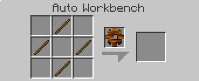
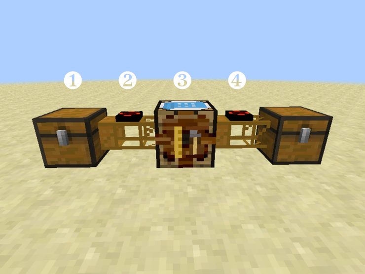

Auto Workbench
from Buildcraft
Recipe

Description
The Auto Workbench is very similar to a regular Crafting Table with several important improvements which make it ideal for automated workflows.
Start by opening the interface and laying out input items just like with a regular crafting table.
|  |
At this point, you'll notice that it does not actually craft anything, but it does show you want item would be crafted. Now, add enough ingredients to complete the recipe three times. Once you do, the workbench will automatically start works and drop the output item in the far-right inventory slot. If you pick up that item, it will automatically start working on the next one.
To see the full potential of the Auto Workbench, you must use transport pipes to transfer input items into the workbench. These will be divided evenly between all the appropriate places in the crafting grid, and once enough items have arrived, the next item will be produced. If these items are piped out, production will be completely automated.
For example, here's a setup which converts sticks into wood gears:
|  |
| see the crafting plan |
- a chest full of sticks
- a Basic Gate (Autarchic Pulsar) on a Wooden Pipe which extracts the items
- an Auto Workbench configured to produce gears (as seen above)
- a second pipe and gate which extracts items from the Auto Workbench
See also: Basic Gate (Autarchic Pulsar), Wooden Transport Pipe
Videos
About
Crafting Guide gives step-by-step tutorials for making anything in Minecraft or its many mods. Just say what you'd like to make, what you already have, it will do the rest, giving you a list of raw materials you need to collect and step-by-step instructions of how much to make of which items in the proper order. You can even ask it to include the materials and instructions for all the tools you'll need along the way!
Donate
Crafting Guide is free for all, but if you find it helpful, donations in any amount are gratefully accepted.
Get Involved
Crafting Guide is completely open-source, and you can help! Whether you want to write a recipe book (all simple JSON), or implement new features, just head over to GitHub to get started.